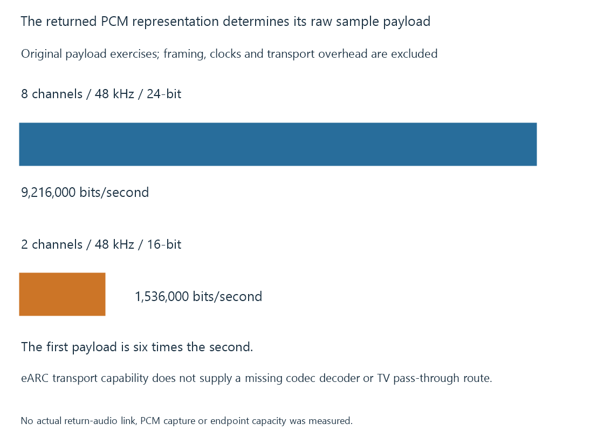

HDMI Enhanced Audio Return Channel (eARC)
Enhanced Audio Return Channel expands the supported TV-to-audio-system transport and capability relationship beyond conventional ARC.
eARC, Enhanced Audio Return Channel, provides a higher-capability audio return path from a TV toward an audio system. It addresses the same general TV-origin direction as ARC, through an implemented eARC arrangement.
Its greater transport capability is useful when the TV needs to return multichannel PCM or supported high-bitrate compressed audio.
The returning representation determines the work
An Emby app on the TV can produce audio for its connected sound system. An external player connected to the TV can also supply audio that the TV must handle before returning it.
The resulting return representation might be PCM or a compressed bitstream. Those alternatives have very different data rates.
HDMI LA documents eARC support for multichannel uncompressed audio and relevant high-bitrate formats. Sony’s receiver material similarly distinguishes multichannel PCM and certain high-bitrate formats from conventional ARC transport.
An eight-channel PCM exercise
For an original PCM payload with eight channels, 48,000 samples per second and twenty-four bits per sample:
8 × 48,000 × 24 = 9,216,000 bits/second
For a separate stereo sixteen-bit payload at the same sample rate:
2 × 48,000 × 16 = 1,536,000 bits/second
The first is six times the second. Both calculations describe raw sample payload, excluding framing, clocks and transport overhead.

This does not establish the limit of a specific port. It explains why returning decoded multichannel audio is a different request from returning stereo PCM.
Transport capacity does not supply a decoder
An audio system still needs to understand the representation it receives. A TV still needs the required input, app/output processing and pass-through behavior.
An eARC label consequently does not prove that every source codec is forwarded unchanged. The TV can support different input and output combinations, and a particular app can expose a narrower route.
For a source that has already been decoded to multichannel PCM, the audio system is not being asked to decode that original compressed codec again. For bitstream output, its decoder support remains relevant.
The representation is therefore useful evidence alongside the return mode.
Object-audio names need their carrier
An object-audio presentation can reach an audio system through different supported encoded arrangements. A family name such as Dolby Atmos does not alone identify whether the current carrier is a streaming compressed representation, a high-bitrate representation or another implemented output.
That is why “Atmos works” on one title is not proof that every Atmos-bearing source will traverse the same TV path.
The source format, app handling, return representation and receiver’s reported input together identify the actual operation. Bitstream passthrough develops that codec/transport separation.
The negotiated route can have a different fallback
An eARC-capable endpoint paired with an ARC-only counterpart may use an implemented ARC fallback. That does not retain all eARC transport capabilities.
The designated ports, cable path and supported capability exchange must participate in the chosen arrangement. A converter or extractor can introduce another processing boundary.
See Also
- HDMI Audio Return Channel (ARC)
- AV receivers in the video path
- HDMI cable categories
- Audio Bitstream Passthrough
- Audio Channel Order